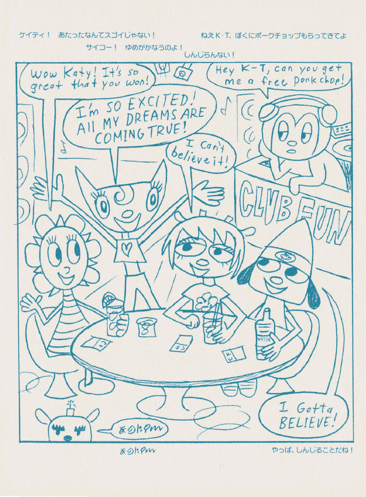

I think all people who have gone through the main PaRappa games can agree that the PaRappa timeline goes like this:
But something that not as many people know or can agree on is whether the non-game media fit in that timeline or not - most notably the 2001 anime. Nor how much time passes between games.
Because yes, did you know that a year actually passes in-universe between the first PaRappa game and Um Jammer Lammy's events?
But before I go on details about the PaRappa timeline and how it all fits, let's first try to ground the series to something resembling a time period
The time period in where the PaRappa games happen seems to be around... the presenr day.
Yes, I know it's obvious, and some more detail-obsessed people might ask me
"why just 'the present day'" when the tech is so obviously coded to be
akin to the late 1990s-early 2000s, as seen in PaRappa's room on PaRappa Gets a Job?"
And my answer to that might as well be "because the late 90s to very early 2000s was
when the PaRappa franchise was in full steam, it was the present day back then"
since the PJ Berri no Mogumogu Munyamunya shorts show PaRappa using a smartphone, a
not-Instagram existing, and characters watching things from flatscreen TVs, yet not
having aged a single bit; nor any explicit time having been mentioned to pass in
reference to the games or other entries in the series (that I know of).
There's also the 2001 PaRappa anime being considered as a prequel where PaRappa and
friends are younger by many, yet having an entire segment be a flashback to
PaRappa and Matt learning how to make a website on the computer.
Computing and especially the Internet weren't seen until UJL, and even then the
Joe Chin laptop was nothing more than an overpriced gadget that was meant to look cool
more than anything else.
It wouldn't be until PaRappa 2 that technology would play an important part in the
world's story and lore, with the backstory of the Noodle Syndicate actually involving
an in-universe equivalent of 2ch behind the scenes![1]
And with Gabin Itou mentioning that this detail was meant to make Colonel Noodle a 'modern' character at the time [2], it is likely that the PaRappa games weren't meant to be set in a concrete year, but rather for the setting to be timeless despite it's apparent 90s radicality.
Now that we have a "defined" time period (read: not at all), we can actually construct our PaRappa Timeline.
It's the first game... and the first entry to happen in our timeline.
Arguably the least surprising part, I know.
But something that you might not know is that exactly a year passes between it and or next entry, which is...
Should have also been the obvious continuation too, especially since it's working name was actually PaRappa 2 (with the game we actually call PaRappa 2 being P3, the P standing for PaRappa).
As I mentioned previously this game happens a year after the first, and then you might ask "how do you know it was a year after the first, and you're not bullshitting me up?".
Well, it's pretty simple - it's on the lyrics to The New Plan[3].
Here comes Chief Puddle, squirting over there, Joe Chin, he's fronting over there
About a year ago, he tried to take Sunny Funny just like how school bullies used to try to take my money.
Following this, he narrates the events of the first stage of PaRappa 1, confirming that PTR1
indeed happens a year prior to UJL's events.
But Master Chop Chop Onion made sure that the man is stopped - taught me the kick, chop, punch and block!
Speaking of Chop Chop Master Onion, this game is the turning point in his series-long character arc. He loses his dojo, his students, and the fact that he even lost his dojo breaks one part of the franchise out of continuity to the rest of it, but bridges another firmly with the rest by showing the beginning of something that would become a lot more important later on...
Um Jammer Lammy NOW! seems like a game that is meant to be just "UJL but fancier" on the surface.
But if you have done so much as to watch the MilkCan interviews, you will come to the realization that it's actually a sequel, happening shortly after the events of the original game.
Very shortly, because the laptop ad happens right after you finish PaRappa's story mode
in the original console version of UJL, with it leading to a post-credits scene where
Ma-san tries actually using it.
...and this ad appears again in UJL NOW, alongside many other parody ads made exclusively
for UJL NOW!.
One of these ads features Chop Chop Master Onion leading a fitness program, with his assistant in it heavily resembling (or perhaps even being?) the same assistant he'd be seen with in PaRappa 2.
However, we can't get there just yet, because we have one non-game entry to cover...
Or at least the first four comics, since Square E. Bear isn't really connected to the PaRappa cast.
But yes, they are canon. Even if they're written by Rodney as opposed to Gabin Itou (with likely contributions from Matsuura, Rodney and RYU), they're still canon. Rodney co-owns the PaRappa IP alongside Sony after all.
We can confirm these comics happen between UJL (NOW) and PTR2 through this page of Katy's Shopping Explosion, in which we see Lammy sitting next to Katy.
Ma-san also appears in this picture.
There are also various recurring locations across the comics such as Dot's Diner and Buttonose's Shop, which further implies that these stories are one after the other in the timeline.
However, there are two things that haven't happened yet - PaRappa and Sunny finally
going steady and for real this time, as well as PJ and Sweety meeting and falling in
love.
The first one of which wouldn't happen until the end of...
Yep! Did you not expect it, like, at all?
Well, it should have been obvious, but I think PaRappa 2 is more than just the last of the main entries - it also permanently advances the timeline by finally declaring PaRappa and Sunny's relationship as canon through the Come a Long Way music video, with all major entries in the series after it (read: just one) following this.
This also concludes PaRappa's character arc, which leads to the final entry in this timeline to focus on another character...
And we finally did it.
This is the last canon entry on the PaRappa series, and it sure is wonderful to know
that it indeed is a sequel to the main games!
PaRappa and Sunny are shown to be dating in this show, and we finally see PJ and Sweety together - something that we know doesn't happen until after PTR2 due to Sweety only making cameo appearances at best until this show.
The originally anime-exclusive characters Matt, Paula and Pinto also appear in this series (although the latter does so only in a flashback), however, leading to one last question.
The short answer to this question is no.
The longer answer to this question is a bit more complex, but also results in a "no".
And you just need one episode to debunk any canoncity concerning the PaRappa anime - Episode 13 to be exact.
In this episode, Chop Chop Master Onion is mentioned to return to Parappa Town after
a year traveling the world, with him having taught PaRappa karate just before that
started - a yuear being also the gap between PTR1 and UJL
However, CCMO managed to keep his dojo, which contradicts the games' continuity.
In addition, there's a theory that the 2001 PaRappa anime is a prequel, if related to the rest of the series. However, this episode also debunks it due to the aforementioned reasons, as well as it likely comning from a misinterpretation of the GamaSutra interview with Rodney Greenblat.
Matt and Paula's appearances in MoguMunya don't seem to have them mentioning anything related to the anime eihter, further implying that even if they have been canonized, the anime was still not canon.
Therefore, we can say that the 2001 PaRappa anime is a different continuity, which might or might not have branched from PTR1.
Or if you have really slow internet or use one of these l33t ass text browsers then
PaRappa the Rapper (1996) -- 1 year --> Um Jammer Lammy --> Um Jammer Lammy NOW! --> RodneyFun Comic Collection --> PaRappa the Rapper 2 ----> PJ Berri no Mogumogu Munyamunya
PaRappa the Rapper (1996) -- 1 year --> PaRappa the Rapper (2001 anime)
PaRappa the Rapper (2001 anime)
{kind=link}
![[1]](https://parapparchive.hoppingtopping.com/3-PaRappa%20The%20Rapper%202%20%282001%29/Scans/Parappa%20the%20Rapper%202%20Guidebook/Page%20106%2B107.JPG){kind=link}
![[2]](https://parapparchive.hoppingtopping.com/3-PaRappa%20The%20Rapper%202%20%282001%29/Scans/Parappa%20the%20Rapper%202%20Guidebook/Page%20114%2B115.jpg){kind=link}
![[3]](https://parapparchive.hoppingtopping.com/2-Um%20Jammer%20Lammy%20%281999%29/Scans/Albums/PaRappa%20and%20PJ%20-%20I%20Scream%21/SCN_0061.jpg){kind=link}